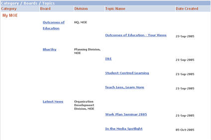
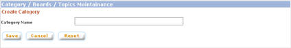
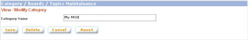
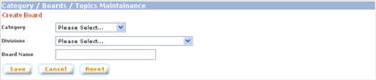
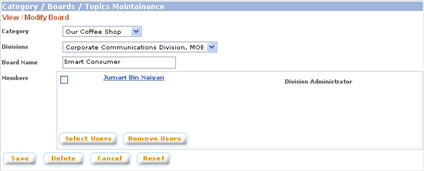
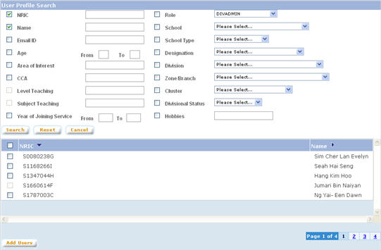
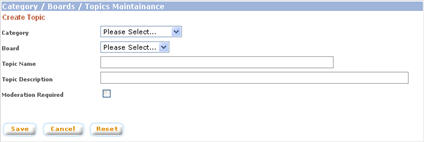
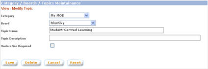

|
Maintain Categories, Boards, and Topics
From this page, you can create / modify / delete categories, boards, and topics for the Discussion Forum.
a. Click on "Category / Board" button from the left panel of the Admin main page
b. The list of categories, boards, and topics will be displayed in hierarchical form

1. Categories
1.1. Create Category
a. Click on the "Create Category" button on the bottom part of the screen
b. In the "Create Category" page, enter the category name. Click on "Save" button to create the category. NOTE: System does not allow duplicate category name.

1.2. Modify Category
a. Click on the category name to be modified
b. In the "View / Modify Category" page, you can modify the name of the category. Click on "Save" button to save the new category name. NOTE: System does not allow duplicate category name.

1.3. Delete Category
a. Click on the category name to be deleted
b. In the "View / Modify Category" page, click on "Delete" button to delete the category. NOTE: System does not allow a category to be deleted if the category still has boards under it.
2. Boards
2.1. Create Board
a. Click on the "Create Board" button on the bottom part of the screen
b. In the "Create Board" page, select the Category and Division of the board and enter the Board Name. Click on "Save" button to create the board. NOTE: System does not allow duplicate board name under same category.

2.2. Modify Board
Click on the board name to be modified
2.2.1. Modify Board Details
In the "View / Modify Board" page, you can move the board to another category (by selecting the category from the category drop down list), change the assigned division, and modify the board name. Click on "Save" button to save modifications made to the board. NOTE: System does not allow duplicate board name under same category

2.2.2. Assign / Remove Division Administrators, Moderators to Board
2.2.2.1. Assign Division Administrators, Moderators
a. Click on the board name
b. In the "View / Modify Board" page, click on the "Select Users" button. This will open the "User Profile Search" pop up window

c. Search users on various criteria and select users to be added.
2.2.2.2. Remove Division Administrators, Moderators from Board
a. Click on the board name
b. Select users to be removed
c. Click on the "Remove Users" button
2.3. Delete Board
a. Click on the board name to be deleted
b. In the "View / Modify Board" page, click on the "Delete" button to delete the board. NOTE: System does not allow a board to be deleted if the board still has topics under it.
3. Topics
3.1. Create Topic
a. Click on the "Create Topic" button on the bottom part of the screen
b. In the "Create Topic" page, enter all the details of the topic. Click on "Save" button to create the topic. NOTE: System does not allow duplicate topic name under same board.

3.2. Modify Topic
a. Click on the name of the topic
b. In the "View / Modify Topic" page, make modifications to the details of the topic. Click on "Save" button to save modifications made.

3.3. Delete Topic
a. Click on the name of the topic
b. In the "View / Modify Topic" page, click on the "Delete" button to delete the topic. NOTE: System does not allow a topic to be deleted if the topic still has threads under it.
|